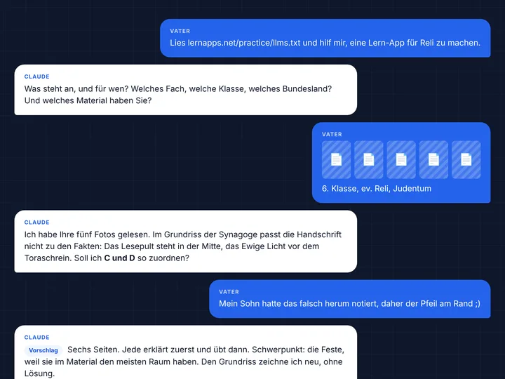
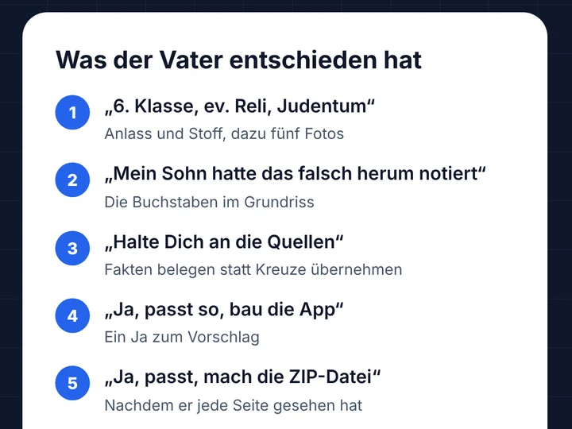

Eine App zum Üben nach Maß
Nächste Woche schreibt Dein Kind eine Arbeit, und Ihr wollt genau den Stoff üben, der drankommt. Oder Du übernimmst eine Klasse in einer Vertretungsstunde und brauchst Übungen zu dem, was sie gerade durchnimmt. Für solche Anlässe gibt es selten eine fertige App, die genau passt.
Hier entsteht sie. Mit Deinem KI-Assistenten und unserer Anleitung machst Du aus dem Material, das Du ohnehin hast, mit wenig Aufwand eine App zum Üben nach Maß. Damit kannst Du zum Beispiel
- Dein Kind gezielt auf eine Arbeit vorbereiten,
- einer Klasse Übungen für eine Vertretungsstunde geben,
- als Vertretung herausfinden, wo eine Klasse steht,
- verpassten Stoff nachholen.
Die App ist kostenlos und läuft im Browser. Wer damit übt, braucht weder ein Konto noch eine Installation.
Soll Dein Kind ein Thema in Ruhe lernen, ohne Arbeit vor Augen? Dafür gibt es die Apps im Katalog: dauerhaft, von Eltern und Lehrkräften gebaut. Hier geht es ums Üben für einen Anlass, genau mit Eurem Stoff.
Was Du davon hast
Ein Beispiel aus einer echten Sitzung mit Claude: Aus Fotos von Arbeitsblättern zum Judentum (Religion, Klasse 6, Hessen) wird eine App für die nächste Arbeit.
-

Ein kurzes Gespräch
Einige kurze Nachrichten von Dir. Claude fragt nach, wo es zählt.
-

Du entscheidest, Claude arbeitet
Claude erstellt eine zum Lernumfang passende App mit zahlreichen Übungen. Ohne dass Du etwas tun musst.
-

Eine App für genau diese Arbeit
Erst erklärt, dann geübt, am Handy und ohne Konto.

Nichts davon ist gestellt: Hier ist das ganze Gespräch, ungekürzt, mit jedem Schritt von Claude.
So läuft es ab
Du brauchst dafür drei Dinge:
- Einen Moment Zeit, vielleicht am Abend, wenn es ruhiger ist.
- Einen KI-Assistenten, der Software schreiben kann: am besten Claude Code; Gemini und Codex sollten auch gehen. Oft ist das in einem Abo schon dabei, in dem Du ohnehin bist. Schau einmal nach, was Deines umfasst.
- Ein GitHub-Konto: kostenlos, eine E-Mail-Adresse genügt, und notfalls hilft Dir Dein KI-Assistent beim Anlegen. Kinder unter 13 Jahren dürfen kein eigenes Konto haben; dann reicht ein Erwachsener ein. Mehr unter GitHub, erklärt.
-
Dein Assistent
Vielleicht gibt es sie schon
Vielleicht hat schon jemand eine App gebaut, die zu Deinem Anlass passt. Dein Assistent sucht im Katalog danach. Gibt es eine, nutzt Ihr sie einfach: kostenlos und ohne Anmeldung, wie jede App auf lernapps.net.
-
Dein Assistent
Aus Deinem Material wird Deine App
Du gibst ihm Fotos von Buchseiten oder Arbeitsblättern. Daraus stellt er Erklärungen, Übungen und eine Selbsteinschätzung zusammen, genau für Euren Stoff. Er schlägt vor, was drankommt; Du sagst Ja oder änderst es.
-
Du
Ein Formular genügt
Den Inhalt schickst Du uns mit einem kurzen Formular. Dabei entsteht ein Issue: eine öffentliche Meldung in unserem Projekt auf GitHub, über die wir Dir antworten.
-
Wir
In wenigen Minuten bereit
Wir prüfen den Inhalt und bauen daraus die App. Nach wenigen Minuten steht ihre Adresse im Issue. Passt noch etwas nicht, steht dort, was fehlt, und Dein Assistent bessert es aus.
-
Du und die Lernenden
Sofort loslegen
Ein Link genügt: Dein Kind oder die Klasse übt auf jedem Gerät mit Browser, ohne Konto und ohne Installation.
-
Du und wir
Gutes bleibt für alle
Hat die App geholfen, hilft sie wahrscheinlich auch anderen, die vor demselben Stoff stehen. Mit einem 👍 auf Deinem Issue sagst Du es uns, und wir prüfen, ob sie in den Katalog passt. So kommt nach und nach immer mehr Wissen zusammen, das wirklich gebraucht wird.
Die App speichert nichts über die Lernenden. Wie weit sie sind, zeigt ihnen die Selbsteinschätzung, und das Ergebnis behalten sie für sich. Nach zwei Wochen wird die App gelöscht, außer sie hat geholfen; mehr dazu unter Lebensdauer. Jeden Handgriff beim Einreichen erklärt Einreichen: Schritt für Schritt. Wie das Ganze in die Plattform passt, zeigt die Journey A tailor-made app for an acute occasion im Plattformdesign (auf Englisch).
Mit dem Assistenten starten
Kopiere diesen Satz in das Gespräch mit Deinem KI-Assistenten und beschreibe Deinen Anlass:
Lies https://lernapps.net/practice/llms.txt und hilf mir, eine App zum Üben für <Anlass> zu machen.
Zum Beispiel: „für die Mathearbeit meiner Tochter nächste Woche" oder „für eine Vertretungsstunde in Englisch, Klasse 7". Die Anleitung für den Assistenten steht in llms.txt.
Gut zu wissen
- Die App prüft sich selbst: Dein Assistent baut die App und prüft sie, bevor Du einreichst. So kommt sie meist beim ersten Mal durch.
- Datenschutz: Das Formular, die ZIP-Datei und die App sind öffentlich. Deshalb gehören keine Namen, keine Schule und keine Fotos in den Inhalt. Mehr unter Datenschutz und Urheberrecht.
- Zwei Wochen: So lange bleibt die App erreichbar. Wie sie länger bleibt, steht unter Lebensdauer.
Wohin als Nächstes?
| Ich möchte … | Seite |
|---|---|
| eine Vorbereitung einreichen | Einreichen: Schritt für Schritt |
| wissen, was in der ZIP-Datei stehen darf | Regeln für Inhalt und Angaben |
| wissen, was mit den Daten geschieht und wem der Inhalt gehört | Datenschutz und Urheberrecht |
| wissen, wie lange eine App bleibt | Lebensdauer |
| als KI-Assistent die Einreichung vorbereiten | llms.txt |
Für Maintainer
- Betrieb: wozu das Repo da ist, wie es läuft und wie man Fehler sucht.
- Prüfungen: was bei einer Einreichung geprüft wird.
- Evaluation der Anleitung: wie ein Agent nach einer Änderung eine neue Sitzung startet und bewertet (derzeit manuell).
- Anleitung für Assistenten: Die llms.txt führt zur Plan-Vorlage
guidance/plan-template.md; sie installiert die vier Skills inskills/und die Inhalts-Skills des Tooling. - Architektur: wie das Repo gebaut ist (arc42). Diese Seite gibt es nur auf Englisch.